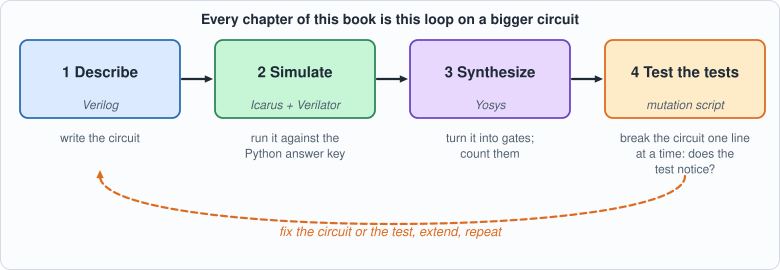
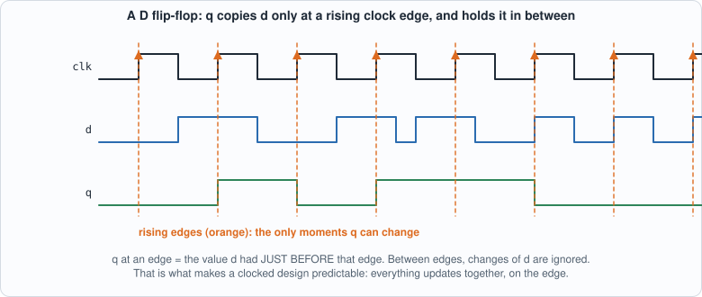
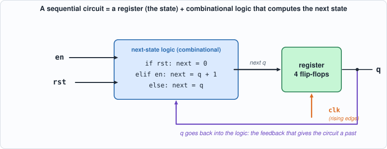
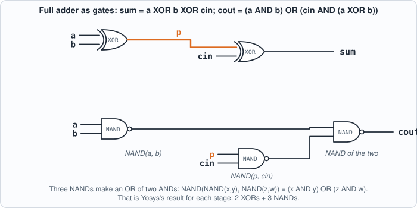
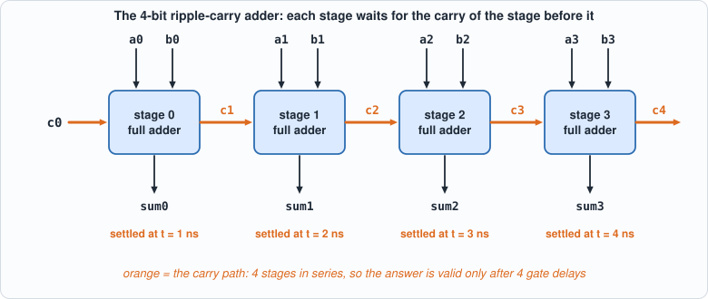
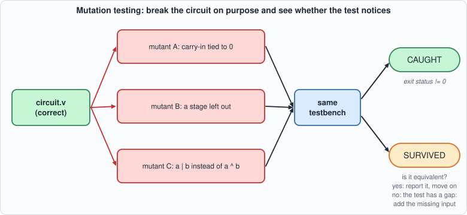

1. The Flow: One Circuit Through Four Tools, and a Way to Test the Tests¶
About the animals in this picture and where they are standing
- Bezoar ibex (wild goat) (Capra aegagrus) lives from Turkey and the Caucasus through Iran to Pakistan. It is the wild ancestor of the domestic goat, which people began keeping some ten thousand years ago.
- Domestic goat (Capra hircus) descends from the bezoar ibex and is among the oldest domesticated animals. There are on the order of a billion of them, kept for milk, meat, fibre and as pack animals.
- Alpine ibex (Capra ibex) lives in the European Alps, usually above the tree line on steep rock, and is a famously sure-footed climber. Males carry horns that can reach about a metre. Hunting left only a small remnant, around the Gran Paradiso in Italy, by the early 1800s; reintroductions have since restored it across the Alps.
- Siberian ibex (Capra sibirica) lives in the high mountains of Central Asia, from the Altai and Tian Shan to the Himalaya. It is one of the largest ibexes, and the males' ridged horns can exceed a metre in length.
The scene is imaginary: it is set on Earth, with its Moon in the sky. The animals are stylised drawings, shown where they could not live, for effect.
What you will understand: the loop every chip team lives in, on the smallest circuits that still have all of its parts. You will write a 4-bit adder in Verilog, check it exhaustively against an answer key written in Python, run it in two simulators that share no code, have Yosys turn it into gates and tell you how many, and then break the circuit on purpose to find out whether your test would have noticed. You will watch a carry ripple through the adder as a waveform drawn in plain text, build your first circuit with memory (a counter, with a clock and a reset), and run it through the same loop. Every later chapter is this loop with a bigger circuit.
What you need to know first: nothing about hardware. If you can read a few lines of C or Python you can read the Verilog. Install the tools first (see Getting Started). Appendices A and B (digital logic and Verilog primers) are there if you want more background than this chapter gives.
What this chapter builds: rtl/adder4.v (the circuit), model/adder4_gold.py (its answer key), tb/adder4_tb.v (the self-checking testbench), tools/hw.py (the toolbox that runs everything the same way every time), tools/mut_ch01.py (the mutation test), and for the two running examples rtl/ripple.v, rtl/counter4.v, model/counter4_gold.py, tb/counter4_tb.v, tools/vcd_ascii.py.
Why start with a loop and not with a circuit¶
A chip is expensive to get wrong. When a company sends a design to a factory to be manufactured, the first batch can cost millions of dollars and takes months; a bug found afterwards means paying for another batch (a "respin"). Because of that, chip teams spend far more effort checking a design than writing it: by common estimates, verification takes around half of the engineering time of a chip project, and sometimes more. The craft of hardware design is to find mistakes while they are still cheap, which means in software, before anything is built.
The way a team does that is a loop, and it has the same four steps whether the circuit is a 4-bit adder or a billion-transistor processor:
| Step | Question it answers | Tool in this book |
|---|---|---|
| Describe | What circuit do I want? | Verilog, a hardware description language |
| Simulate | Does the description do the right thing on test inputs? | Icarus Verilog and Verilator (two different simulators) |
| Synthesize | Can the description be turned into real gates, and how many? | Yosys |
| Test the tests | If I made a mistake, would my tests have noticed? | a mutation script written for this book |
The fourth step is the unusual one, and the reason this book starts with it. A test that has never failed has never been shown to be able to fail. A thousand passing tests of a broken circuit are worth nothing if the tests cannot see the break. So before trusting a test, you break the circuit on purpose, in many small ways, and check that the test complains each time.
The rest of this chapter takes one tiny circuit and one tiny testbench through the full loop, slowly, so that every later chapter can run the same loop on bigger things without re-explaining it.

Figure 1.1: the four-step loop that every chapter of the book repeats, with the tool used at each stepHardware description, properly¶
Verilog looks like a programming language and is not one. The most important thing to understand about it is the difference between describing a circuit and executing a program.
Everything happens at once. In a physical circuit, every gate is always working: when an input of a gate changes, its output follows a few picoseconds later, and nothing "runs" in a sequence. Verilog is a notation for what is connected to what. A statement like
does not mean "when execution reaches this line, compute the XOR". It means "the wire sum is always the XOR of a, b and cin". If you wrote ten assign statements, they would have no order; swapping two lines changes nothing. A simulator is a program that imitates this simultaneity: it keeps a value for every wire, and whenever an input of some expression changes, it recomputes that expression and, if the result changed, propagates the change onward. This is called event-driven simulation, an "event" being a change of a value.
Modules are the unit of design. A module is a box with named input and output wires:
Inside a module there can be wires, assignments and other modules. You do not "call" a module as you call a function: you instantiate it, which means building another copy of the box and connecting its wires. Four instances of a full adder are four physical adders, all present at once. A design is a tree of instances, with one top module at the root.
Combinational and sequential circuits. A combinational circuit's outputs depend only on its inputs right now: an adder, a multiplexer, a decoder. A sequential circuit has memory: its outputs depend on what happened before. The basic memory element is the flip-flop: a one-bit storage cell that copies its input d to its output q at a particular moment, the rising edge of a clock signal, and holds that value until the next edge. Nearly everything interesting (counters, state machines, processors) is combinational logic between banks of flip-flops, all updating on the same clock edge. A register is a group of flip-flops holding a multi-bit value.
In Verilog, a flip-flop is written with an always block sensitive to the clock edge and non-blocking assignments (<=):
always @(posedge clk) q <= d; // at every rising edge of clk, q takes the value d had just before the edge
The <= matters: all non-blocking assignments in a clock edge are evaluated with the values from before the edge and take effect together after it, which is exactly how real flip-flops behave (they all sample at the same instant). A beginner's most common mistake is to write = (a blocking assignment) in a clocked block, which makes the simulation depend on the order of the statements and no longer match the hardware. The rule used throughout the book: assign and = for combinational logic, <= for clocked registers.

Figure 1.2: a D flip-flop: q takes the value d had just before each rising clock edge (orange) and holds it until the next one
Figure 1.3: a sequential circuit is a register plus combinational next-state logic, with the register's output fed back as an inputParameters and generate loops. A module can take parameters (constants fixed when you instantiate it, such as a width or a size) and can contain generate loops that create many copies of a piece of hardware. The adder below uses one to build its four stages from one description. A generate for is not a loop that runs: it is a macro that stamps out hardware at elaboration time.
Time in simulation. The simulator also has a notion of simulated time. #10 in a testbench means "wait 10 time units", where the unit is set by a `timescale line. Time exists only in simulation and in testbenches; synthesis ignores delays, because a synthesized circuit's delays come from its gates, not from a number someone typed. (Running example A uses assign #1 precisely to make the simulator imitate gate delays, so that you can see them.)
A testbench is a module with no inputs and no outputs. It instantiates the circuit under test (the DUT), drives its inputs from initial blocks (code that runs once, at time zero, as a script), observes its outputs, and checks them. Testbenches are the one place Verilog is used like a normal programming language: loops, if, printing, reading files. None of that is synthesizable and none of it is meant to be.
Binary addition by hand¶
Before reading the circuit, do the arithmetic yourself, the way the circuit does it. A half adder adds two bits: the sum bit is a XOR b (1 if exactly one input is 1) and the carry is a AND b. A full adder adds three bits, the two operands and a carry coming in from the stage to its right, and produces a sum bit and a carry going out to the stage on its left:
| a | b | cin | sum | cout |
|---|---|---|---|---|
| 0 | 0 | 0 | 0 | 0 |
| 0 | 0 | 1 | 1 | 0 |
| 0 | 1 | 0 | 1 | 0 |
| 0 | 1 | 1 | 0 | 1 |
| 1 | 0 | 0 | 1 | 0 |
| 1 | 0 | 1 | 0 | 1 |
| 1 | 1 | 0 | 0 | 1 |
| 1 | 1 | 1 | 1 | 1 |
The pattern: sum = a XOR b XOR cin (the number of 1s among the inputs is odd), and cout = 1 when at least two of the three inputs are 1, which can be written (a AND b) OR (cin AND (a XOR b)).

Figure 1.4: a full adder drawn as gates, as Yosys builds it: two XORs for the sum, three NANDs for the carry (a short stub with a name is connected to every other stub of that name)Now add 7 and 5 in 4 bits, one column at a time from the right:
carries: 1 1 1 0 (the carry INTO each column; the right-most column has carry-in 0)
a = 7 = 0 1 1 1
b = 5 = 0 1 0 1
-------
column 0 (weight 1): 1 + 1 + 0 = 2 -> sum bit 0, carry 1
column 1 (weight 2): 1 + 0 + 1 = 2 -> sum bit 0, carry 1
column 2 (weight 4): 1 + 1 + 1 = 3 -> sum bit 1, carry 1
column 3 (weight 8): 0 + 0 + 1 = 1 -> sum bit 1, carry 0
result: 1 1 0 0 = 12, carry out of the top = 0
Each column needs the carry from the column to its right, which is why this is a ripple-carry adder: the carry ripples from the least significant bit upward, and the last column cannot finish before the first one does. It is slow (four stages in series) and it is tiny, and these two facts are the same fact. Faster adders look ahead to guess carries, at the cost of more gates; the book's hardware never needs the speed, and Chapter 10 measures how much the carry chain costs.

Figure 1.5: four full adders in a row: each stage's carry-out feeds the next stage's carry-in, so the last sum bit is valid only after four gate delaysThe circuit: rtl/adder4.v¶
// Chapter 1: a 4-bit ripple-carry adder built from four full adders. The smallest circuit that still has all the parts of the flow:
// combinational logic, a hierarchy, a testbench, a golden model written in another language, and numbers from synthesis.
module full_adder(input a, input b, input cin, output sum, output cout);
assign sum = a ^ b ^ cin;
assign cout = (a & b) | (cin & (a ^ b));
endmodule
module adder4(input [3:0] a, input [3:0] b, input cin, output [3:0] sum, output cout);
wire [4:0] c;
assign c[0] = cin;
genvar i;
generate for (i = 0; i < 4; i = i + 1) begin : stage
full_adder fa(.a(a[i]), .b(b[i]), .cin(c[i]), .sum(sum[i]), .cout(c[i + 1]));
end endgenerate
assign cout = c[4];
endmodule
Reading it from the top:
full_adderis the table above, as twoassignstatements: one for the sum and one for the carry out. No clock, no memory: combinational.adder4has two 4-bit inputsaandb, a carry-incin, a 4-bitsumand a carry-outcout. The wire vectorcholds the five carries:c[0]is the carry-in,c[1]goes from stage 0 into stage 1, and so on up toc[4], which is the carry-out.- The generate loop stamps out four copies of
full_adder, namedstage[0]tostage[3]. Stageitakes bitiof each operand and carryc[i], and produces sum bitiand carryc[i+1]. (The block label isstageand notbit, becausebitis a keyword in SystemVerilog; the author found that out by getting a syntax error, which is the kind of thing that happens.)
The answer key: model/adder4_gold.py¶
The golden model is written in another language by design. If the Verilog and its checker were written by the same hands in the same notation, a misunderstanding would be copied into both and the test would pass. Here the answer key is a few lines of Python arithmetic (a + b + cin, split into a 4-bit sum and a carry), and it enumerates every input: 16 values of a, 16 of b, 2 of cin, 512 cases in all. Nothing is sampled: for a circuit this small, exhaustive is cheap, and "the testbench passes" then means "the circuit is correct", not "the circuit is probably correct".
#!/usr/bin/env python3
"""Chapter 1: the golden model of the 4-bit adder, written in Python and sharing nothing with the Verilog. It writes every possible input (2^9 = 512 of them) with the answer, one line per case, as hexadecimal, for the testbench to read with $readmemh.
Line format: a b cin -> sum cout packed as one 17-bit word: {a[3:0], b[3:0], cin, sum[3:0], cout} = 4+4+1+4+1 = 14 bits."""
import sys
def gold(a, b, cin): t = a + b + cin; return t & 15, t >> 4
out = []
for a in range(16):
for b in range(16):
for cin in range(2):
s, c = gold(a, b, cin); out.append((a << 10) | (b << 6) | (cin << 5) | (s << 1) | c)
open(sys.argv[1], "w").write("\n".join("%04x" % v for v in out) + "\n"); print(len(out), "cases written to", sys.argv[1])
Notice what the model does not contain: any mention of full adders, carries, XOR gates or stages. It knows only what addition means. That independence is the whole point. A bug in the circuit's carry logic cannot also be in the model, because the model does not have carry logic.
The file it writes is a list of hexadecimal words, one per case, which the testbench loads into a memory. A text file is a deliberately boring interface: any language can write it, any simulator can read it.
The testbench: tb/adder4_tb.v¶
// Chapter 1: a self-checking testbench. It applies all 512 inputs and compares the circuit's output with the answers the Python golden model wrote.
// It prints one line, PASS or FAIL, and calls $fatal on a mismatch so that the exit status of the simulator says what happened.
`timescale 1ns/1ps
module adder4_tb;
reg [3:0] a, b; reg cin; wire [3:0] sum; wire cout;
adder4 dut(.a(a), .b(b), .cin(cin), .sum(sum), .cout(cout));
reg [13:0] vec [0:511]; integer i, bad; reg [13:0] v;
initial begin
$readmemh("out/adder4_vectors.hex", vec); bad = 0;
for (i = 0; i < 512; i = i + 1) begin
v = vec[i]; a = v[13:10]; b = v[9:6]; cin = v[5]; #1;
if ({sum, cout} !== {v[4:1], v[0]}) begin bad = bad + 1; if (bad <= 5) $display("MISMATCH a=%0d b=%0d cin=%0d: got sum=%0d cout=%0d, want sum=%0d cout=%0d", a, b, cin, sum, cout, v[4:1], v[0]); end
end
if (bad == 0) $display("PASS: all 512 cases match the golden model"); else begin $display("FAIL: %0d of 512 cases differ", bad); $fatal(1, "adder4 failed"); end
$finish;
end
endmodule
Line by line:
$readmemh("out/adder4_vectors.hex", vec)loads the hex file into the arrayvec. The path is relative to the directory the simulator is run from, which is why every script in the book runs the tools from the book's root.- The loop applies each case's inputs (
a,b,cin) and waits#1, one time unit, for the combinational logic to settle. (Zero-delay logic would settle in the same instant, but the#1makes the intent explicit and matters when delays are present.) - The comparison uses
!==, not!=. The plain operator returns unknown (x) when either side contains an unknown bit, and anifon an unknown condition counts as false, so a circuit whose output isx(for instance a wire nobody drives) would pass silently.!==compares the four-valued bits literally:xnever equals a known bit, so it is a mismatch. - On the first five mismatches it prints the failing inputs, so you see what went wrong. At the end it calls
$fatalif any case failed. That makes the simulator's exit status non-zero, and the exit status is what lets a script decide pass or fail with no human reading the output. A testbench that only prints "FAIL" in text can't be used for mutation testing: the mutation script needs a machine-readable verdict.
A testbench built this way is self-checking: it contains its own answers (through the golden file) and decides for itself. Everything in this book is tested that way.
The toolbox: tools/hw.py¶
#!/usr/bin/env python3
"""The book's little toolbox around three open-source programs: Icarus Verilog (iverilog, vvp), Verilator, and Yosys. Every chapter's tests go through these functions, so a test that passes
here has passed in two independent simulators, and a synthesis number comes from the same script every time.
sim_icarus(files, top) compile with iverilog (-g2012) and run with vvp; returns (exit status, output)
sim_verilator(files, top) compile with Verilator (--binary --timing) and run the binary; returns (exit status, output)
synth_stats(files, top, script) run a Yosys script and return the cell counts it reports
mutate(mutants, files, top) break copies of the sources one line at a time, run the testbench on each, and report which mutants the test caught
All run in the book's root directory, because the testbenches read their vectors from out/."""
import concurrent.futures, os, re, shutil, subprocess, sys, tempfile
ROOT = os.path.dirname(os.path.dirname(os.path.abspath(__file__)))
def _run(cmd, cwd=ROOT, timeout=900):
p = subprocess.run(cmd, cwd=cwd, capture_output=True, text=True, timeout=timeout, errors="replace"); return p.returncode, p.stdout + p.stderr
def sim_icarus(files, top, root=ROOT, defines=()):
d = tempfile.mkdtemp(prefix="ico_"); exe = os.path.join(d, "sim")
rc, out = _run(["iverilog", "-g2012", "-Wall", "-s", top, "-o", exe] + ["-D" + x for x in defines] + list(files), cwd=root)
if rc != 0: shutil.rmtree(d, ignore_errors=True); return 99, "COMPILE ERROR\n" + out
rc, out = _run(["vvp", "-n", exe], cwd=root); shutil.rmtree(d, ignore_errors=True); return rc, out
def sim_verilator(files, top, root=ROOT, defines=(), args=(), runargs=()):
d = tempfile.mkdtemp(prefix="vlt_")
rc, out = _run(["verilator", "--binary", "--timing", "-Wno-fatal", "-Wno-lint", "-Wno-style", "--top-module", top, "-Mdir", d, "-o", "sim"] + list(args) + ["-D" + x for x in defines] + list(files), cwd=root)
if rc != 0: shutil.rmtree(d, ignore_errors=True); return 99, "COMPILE ERROR\n" + out
rc, out = _run([os.path.join(d, "sim")] + list(runargs), cwd=root); shutil.rmtree(d, ignore_errors=True); return rc, out
def synth_stats(files, top, script=None, root=ROOT):
"""Runs Yosys on the files and returns {'cells': {type: count}, 'total': n, 'log': text}. The default script is the generic flow: read, elaborate, optimize, map to simple gates."""
script = script or f"synth -flatten -top {top}; stat"
rc, out = _run(["yosys", "-p", "; ".join(["read_verilog -sv " + " ".join(files), "hierarchy -top " + top, script])], cwd=root)
if rc != 0: return {"cells": {}, "total": -1, "log": out}
last = out.rsplit("Number of cells", 1)
sec = out[out.rfind("=== " + top + " ==="):] if ("=== " + top + " ===") in out else out
cells = {}
for m in re.finditer(r"^\s+(\$?\w+)\s+(\d+)\s*$", sec.split("design hierarchy")[0] if "design hierarchy" in sec else sec, re.M): cells[m.group(1)] = int(m.group(2))
m = re.search(r"(\d+)\s+cells", sec) or re.search(r"Number of cells:\s+(\d+)", sec)
return {"cells": cells, "total": int(m.group(1)) if m else sum(cells.values()), "log": out}
def mutate(mutants, files, top, tb_files, root=ROOT, workers=4, title="", simulator="icarus", extra_files=(), defines=()):
"""mutants: list of (file, label, old, new); each `old` must occur exactly once in `file`. Returns (caught, total, lines)."""
lines = []
def one(i):
fn, label, old, new = mutants[i]; d = tempfile.mkdtemp(prefix="mut_")
for sub in ("rtl", "tb", "out", "model"):
if os.path.isdir(os.path.join(root, sub)): shutil.copytree(os.path.join(root, sub), os.path.join(d, sub))
p = os.path.join(d, fn); s = open(p).read()
if s.count(old) != 1: shutil.rmtree(d, ignore_errors=True); return label, "BAD ANCHOR (%d occurrences)" % s.count(old), None
open(p, "w").write(s.replace(old, new)); fs = list(files) + list(tb_files) + list(extra_files)
rc, out = (sim_icarus if simulator == "icarus" else sim_verilator)(fs, top, root=d, defines=defines); shutil.rmtree(d, ignore_errors=True)
if rc == 99: return label, "DID NOT BUILD", out
return label, ("caught" if rc != 0 or "PASS" not in out else "NOT CAUGHT"), out
with concurrent.futures.ThreadPoolExecutor(max_workers=workers) as pool:
res = list(pool.map(one, range(len(mutants))))
caught = 0
for label, status, out in res:
lines.append(f"{label}: {status}"); caught += status == "caught"
return caught, len(mutants), lines
Every chapter's test goes through the same small functions around the three programs, so that a result always means the same thing:
sim_icarus(files, top)compiles withiverilog -g2012and runs withvvp. Icarus Verilog is an interpreting simulator: it compiles the Verilog into an intermediate form and executes it step by step, tracking four values for each bit (0, 1,xfor unknown,zfor undriven).sim_verilator(files, top)runs Verilator, which works completely differently: it translates the design into C++, compiles that with a C++ compiler into a native program and runs it. It is much faster on big designs, and it is two-valued: a bit is 0 or 1, neverx. That difference is exactly why running both is useful (below).synth_stats(files, top)runs Yosys with a script and parses the cell counts from its report.mutate(mutants, files, top, tb_files)is the mutation tester, used at the end of the chapter. Each mutant is a (file, label, old text, new text) tuple: the function copies the sources to a temporary directory, replacesoldbynew(which must occur exactly once, so a typo in a mutant cannot silently do nothing), runs the testbench, and reports whether the simulator's exit status was non-zero ("caught") or the run still ended inPASS("NOT CAUGHT").
Running the whole flow¶
#!/usr/bin/env python3
"""Chapter 1: one circuit through the whole flow, printing what each tool says. Usage: ch01_flow.py"""
import os, subprocess, sys
sys.path.insert(0, os.path.dirname(os.path.abspath(__file__))); import hw
F = ["rtl/adder4.v"]; TB = ["tb/adder4_tb.v"]
print("== 1. the golden model writes the 512 expected answers"); print(subprocess.run([sys.executable, "model/adder4_gold.py", "out/adder4_vectors.hex"], cwd=hw.ROOT, capture_output=True, text=True).stdout.strip())
print("\n== 2. Icarus Verilog"); rc, out = hw.sim_icarus(F + TB, "adder4_tb"); print(out.strip(), f"\n(exit status {rc})")
print("\n== 3. Verilator, a second, independent simulator"); rc, out = hw.sim_verilator(F + TB, "adder4_tb"); print(out.strip(), f"\n(exit status {rc})")
print("\n== 4. Yosys, generic gates"); r = hw.synth_stats(F, "adder4", "synth -flatten -top adder4; abc -g AND,NAND,OR,NOR,XOR,XNOR; opt_clean; stat")
print("cells after mapping to simple gates:", dict(sorted(r["cells"].items())), "total", r["total"])
print("\n== 5. Yosys, for an FPGA (the Lattice iCE40 family's 4-input lookup tables)"); r = hw.synth_stats(F, "adder4", "synth_ice40 -flatten -top adder4; stat")
print("cells:", dict(sorted(r["cells"].items())), "total", r["total"])
Output (cloud sandbox -- live-executed; Icarus Verilog 12.0, Verilator 5.020, Yosys 0.33)
== 1. the golden model writes the 512 expected answers
512 cases written to out/adder4_vectors.hex
== 2. Icarus Verilog
PASS: all 512 cases match the golden model
tb/adder4_tb.v:15: $finish called at 512000 (1ps)
(exit status 0)
== 3. Verilator, a second, independent simulator
PASS: all 512 cases match the golden model
- tb/adder4_tb.v:15: Verilog $finish
(exit status 0)
== 4. Yosys, generic gates
cells after mapping to simple gates: {'$_NAND_': 12, '$_XOR_': 8} total 20
== 5. Yosys, for an FPGA (the Lattice iCE40 family's 4-input lookup tables)
cells: {'SB_LUT4': 9} total 9
Reading it¶
- Both simulators pass all 512 cases. Icarus interprets the design; Verilator translates it to C++ and compiles it. They are different programs written by different people, so a bug in one is unlikely to be a bug in the other. They also differ in a way that matters in later chapters: Icarus is four-valued, Verilator two-valued. A testbench that waits for an unknown value to appear works in Icarus and hangs in Verilator (Chapter 2 shows this happening); a circuit with an unreset register behaves differently in the two (Chapter 10 shows that too). Running every testbench in both is the cheapest independent check there is.
- Yosys, generic gates: 20 cells. Eight XORs and twelve NANDs. Each full adder is two XORs (the sum is
a XOR b XOR cin, two two-input XORs in a row) and three NANDs (the carry(a AND b) OR (cin AND (a XOR b))rewritten using the fact thatNOT(NOT(x) AND NOT(y)) = x OR y: one NAND fora AND b, one forcin AND (a XOR b), one to combine them), times four stages. That is the "number of gates" in the sense a textbook means it. - Yosys, iCE40: 9 lookup tables. An FPGA does not have gates; it has lookup tables (LUTs): small memories (here 4 inputs, 1 output) whose contents can implement any function of their inputs. The tool packs the logic into them. Nine tables for the same circuit shows why "how big is it?" has no single answer: it depends on the target technology. The book uses both counts, always labelled.
Neither number is an area in square millimetres or a speed; real figures need a process library and a place-and-route tool, which this book does not use. Chapter 10 introduces a toy cell library so that areas and delays can at least be compared consistently.
Testing the test¶
A testbench that passes proves nothing about the testbench. The only way to learn whether a test can fail is to give it a circuit that is wrong. tools/mut_ch01.py makes ten mutants: copies of the adder with one line broken (a term dropped, a wire crossed, a stage missing), and runs the testbench on each. Every mutant must be caught, which here means the simulator's exit status is not zero.

Figure 1.6: mutation testing: break the circuit in small ways, run the same testbench on each broken copy, and read the verdict#!/usr/bin/env python3
"""Chapter 1: test the test. Break the adder one line at a time and check that the testbench notices. The last mutant is deliberately EQUIVALENT (it changes the circuit's text but not its behaviour), to show what a survivor looks like when it is not a gap in the test."""
import os, sys
sys.path.insert(0, os.path.dirname(os.path.abspath(__file__))); import hw
M = [
("rtl/adder4.v", "sum: the carry-in is left out of the sum", "assign sum = a ^ b ^ cin;", "assign sum = a ^ b;"),
("rtl/adder4.v", "sum: an AND instead of an XOR", "assign sum = a ^ b ^ cin;", "assign sum = a ^ b & cin;"),
("rtl/adder4.v", "carry: the carry-in term is dropped", "assign cout = (a & b) | (cin & (a ^ b));", "assign cout = (a & b);"),
("rtl/adder4.v", "carry: OR instead of AND between the generate and propagate terms", "assign cout = (a & b) | (cin & (a ^ b));", "assign cout = (a & b) & (cin & (a ^ b));"),
("rtl/adder4.v", "chain: every stage takes the adder's own carry-in", "full_adder fa(.a(a[i]), .b(b[i]), .cin(c[i]),", "full_adder fa(.a(a[i]), .b(b[i]), .cin(c[0]),"),
("rtl/adder4.v", "chain: stage i feeds stage i, not stage i + 1", ".cout(c[i + 1]));", ".cout(c[i]));"),
("rtl/adder4.v", "chain: the carry-in is tied to zero", "assign c[0] = cin;", "assign c[0] = 1'b0;"),
("rtl/adder4.v", "output: the carry-out is taken one stage early", "assign cout = c[4];", "assign cout = c[3];"),
("rtl/adder4.v", "wiring: bit 1 of b is replaced by bit 1 of a", ".b(b[i]),", ".b(i == 1 ? a[i] : b[i]),"),
("rtl/adder4.v", "structure: only three of the four stages are built", "for (i = 0; i < 4; i = i + 1)", "for (i = 0; i < 3; i = i + 1)"),
]
EQUIV = [("rtl/adder4.v", "EQUIVALENT: carry written with OR instead of XOR for the propagate term", "assign cout = (a & b) | (cin & (a ^ b));", "assign cout = (a & b) | (cin & (a | b));")]
F = ["rtl/adder4.v"]; TB = ["tb/adder4_tb.v"]
print("NOTE: this script deliberately breaks copies of rtl/adder4.v. 'caught' lines are EXPECTED: they show the testbench can detect the mistake.")
c, n, lines = hw.mutate(M, F, "adder4_tb", TB); print("\n".join(lines)); print(f"\n{c} of {n} broken circuits caught")
c2, n2, l2 = hw.mutate(EQUIV, F, "adder4_tb", TB); print("\nAn equivalent change (same behaviour, different text):"); print("\n".join(l2))
sys.exit(0 if c == n and c2 == 0 else 1)
Output (cloud sandbox -- live-executed)
NOTE: this script deliberately breaks copies of rtl/adder4.v. 'caught' lines are EXPECTED: they show the testbench can detect the mistake.
sum: the carry-in is left out of the sum: caught
sum: an AND instead of an XOR: caught
carry: the carry-in term is dropped: caught
carry: OR instead of AND between the generate and propagate terms: caught
chain: every stage takes the adder's own carry-in: caught
chain: stage i feeds stage i, not stage i + 1: caught
chain: the carry-in is tied to zero: caught
output: the carry-out is taken one stage early: caught
wiring: bit 1 of b is replaced by bit 1 of a: caught
structure: only three of the four stages are built: caught
10 of 10 broken circuits caught
An equivalent change (same behaviour, different text):
EQUIVALENT: carry written with OR instead of XOR for the propagate term: NOT CAUGHT
All ten broken circuits were caught. The last line is the other half of the lesson: a mutant can survive without the test being at fault. Writing the propagate term as a | b instead of a ^ b changes the text but not the behaviour (when both inputs are 1 the generate term already forces the carry), so no test, however good, can tell the two apart. Such a survivor is called an equivalent mutant.
How to read a mutation result¶
Mutation testing has a simple logic, and a few cases to keep apart:
| Outcome | What it means | What to do |
|---|---|---|
| mutant caught | the test can see this kind of mistake | nothing: this is the goal |
| mutant survives, and a short argument shows it behaves identically | an equivalent mutant: no test can ever catch it | report it and move on |
| mutant survives, and there is an input on which it differs | a gap in the test: that input was never tried | add that input to the test, rerun, and say so |
| mutant fails to build or the anchor text is not found | the mutant script is wrong, not the test | fix the script |
Keeping the second and third rows apart honestly is most of the discipline. Every later chapter reports its survivors and says, for each, which row it belongs to.
An experiment to show that exhaustiveness earns its keep. A testbench that tried only cin = 0 (half of the 512 cases) would still catch nine of the ten mutants and miss exactly one: the mutant that ties the carry-in to zero. With cin always 0, a circuit with cin stuck at 0 is indistinguishable. The author ran this experiment to find out which mutant it would be, which is why question 4 below can be answered. That is the typical shape of a weak test: it does not miss the big mistakes, it misses the mistake that needs one particular input, and exhaustive testing leaves no such input unexercised.
Running example A: watch a carry ripple¶
The adder is combinational, and in the simulation above it computes its answer in zero time. Real gates take time, and the carry chain is where that shows. This example makes the simulator imitate gate delays so that you can see the ripple.
rtl/ripple.v is the same adder with assign #1 in each full adder: the sum and the carry-out each appear 1 ns after the inputs change. (The delays exist only in simulation; synthesis ignores them.)
`timescale 1ns/1ns
// Chapter 1, running example A: the 4-bit ripple-carry adder again, but with a delay of one time unit in every full adder, so that a simulator shows the carry rippling from stage to stage.
// The delays exist only in simulation (`assign #1`); synthesis ignores them. Real gates are not instantaneous, and this is the simplest way to see what that does.
module fa_delay (input a, input b, input cin, output sum, output cout);
assign #1 sum = a ^ b ^ cin;
assign #1 cout = (a & b) | (cin & (a ^ b));
endmodule
module ripple4 (input [3:0] a, input [3:0] b, input cin, output [3:0] sum, output cout);
wire [4:0] c; assign c[0] = cin;
genvar i;
generate for (i = 0; i < 4; i = i + 1) begin : stage
fa_delay fa (.a(a[i]), .b(b[i]), .cin(c[i]), .sum(sum[i]), .cout(c[i+1]));
end endgenerate
assign cout = c[4];
endmodule
// Chapter 1, running example A: apply 0111 + 0001 (the carry has to travel through all four stages) and dump every signal change to a VCD file, a standard waveform format.
`timescale 1ns/1ns
module ripple_tb;
reg [3:0] a, b; reg cin; wire [3:0] sum; wire cout; wire [4:0] c = {dut.stage[3].fa.cout, dut.stage[2].fa.cout, dut.stage[1].fa.cout, dut.stage[0].fa.cout, cin};
ripple4 dut (.a(a), .b(b), .cin(cin), .sum(sum), .cout(cout));
initial begin
$dumpfile("out/ripple.vcd"); $dumpvars(0, ripple_tb);
a = 4'b0000; b = 4'b0000; cin = 0; #10;
a = 4'b0111; b = 4'b0001; #10; // 7 + 1: the carry ripples through stages 0, 1, 2
a = 4'b1111; b = 4'b0001; #10; // 15 + 1: through all four, out of the top
$finish;
end
endmodule
The testbench applies 0 + 0, then 7 + 1 (a carry ripples through three stages), then 15 + 1 (through all four and out of the top), and writes every signal change to a VCD file ("value change dump", the standard waveform format that every simulator and viewer understands). Normally you would open a VCD in a viewer such as GTKWave. This book's tool tools/vcd_ascii.py draws one as text, so you can read it in a terminal or on this page with nothing to install:
#!/usr/bin/env python3
"""Draw a VCD waveform file as text. Usage: vcd_ascii.py FILE.vcd T0 T1 [signal ...] (times in the VCD's time unit; signals by full name such as ripple_tb.sum, default all of the top scope)
One character per time step; a 1-bit signal is drawn as _ and #, a bus as its hexadecimal value, held until it changes. No GUI needed."""
import re, sys
def parse(path):
sig = {}; scope = []; ids = {}; cur = 0; events = []
for line in open(path):
t = line.split()
if not t: continue
if t[0] == "$scope": scope.append(t[2])
elif t[0] == "$upscope": scope.pop()
elif t[0] == "$var": name = ".".join(scope + [t[4]]); ids.setdefault(t[3], []).append(name); sig[name] = {"w": int(t[2]), "ev": []}
elif t[0].startswith("#"): cur = int(t[0][1:])
elif t[0][0] in "01xz" and len(t[0]) > 1 and not t[0].startswith("$"):
for n in ids.get(t[0][1:], []): sig[n]["ev"].append((cur, t[0][0]))
elif t[0][0] == "b":
for n in ids.get(t[1], []): sig[n]["ev"].append((cur, t[0][1:]))
return sig
def value_at(ev, t):
v = "x"
for tt, val in ev:
if tt <= t: v = val
else: break
return v
def draw(path, t0, t1, names=None):
sig = parse(path); names = names or [n for n in sig if n.count(".") == 1]; width = max(len(n) for n in names); out = []
out.append(" " * (width + 2) + "".join(str((t // 10) % 10) if t % 10 == 0 else " " for t in range(t0, t1)) + " (time, tens)")
for n in names:
w = sig[n]["w"]; row = ""; prev = None
for t in range(t0, t1):
v = value_at(sig[n]["ev"], t)
if w == 1: row += {"0": "_", "1": "#", "x": "?", "z": "?"}[v]
else:
h = (format(int(v, 2), "X") if set(v) <= set("01") else "?"); row += (h if v != prev else "=")
prev = v
out.append(f"{n:{width}s} {row}")
return "\n".join(out)
if __name__ == "__main__": print(draw(sys.argv[1], int(sys.argv[2]), int(sys.argv[3]), sys.argv[4:] or None))
#!/usr/bin/env python3
"""Chapter 1, running example A: watch a carry ripple. Simulates the delayed 4-bit adder, draws the waveform as text, and checks the transient values against a hand calculation. Usage: ch01_example_a.py"""
import os, subprocess, sys
sys.path.insert(0, os.path.dirname(os.path.abspath(__file__))); import hw, vcd_ascii
R = hw.ROOT
r = subprocess.run(["iverilog", "-g2012", "-s", "ripple_tb", "-o", "/tmp/ripple.vvp", "rtl/ripple.v", "tb/ripple_tb.v"], cwd=R, capture_output=True, text=True); assert r.returncode == 0, r.stderr
subprocess.run(["vvp", "-n", "/tmp/ripple.vvp"], cwd=R, capture_output=True)
print("== the waveform of ripple_tb (time in ns; each column is 1 ns; '=' means 'unchanged'; # is 1, _ is 0)\n")
print(vcd_ascii.draw(os.path.join(R, "out", "ripple.vcd"), 0, 30, ["ripple_tb.a", "ripple_tb.b", "ripple_tb.cin", "ripple_tb.sum", "ripple_tb.cout", "ripple_tb.c"]))
sig = vcd_ascii.parse(os.path.join(R, "out", "ripple.vcd")); ev = sig["ripple_tb.sum"]["ev"]
print("\nevery change of `sum`:", [(t, int(v, 2)) for t, v in ev if set(v) <= set("01")])
print("\n== the same thing worked out by hand: 0111 + 0001, each full adder takes 1 ns (the carry out of a stage and its sum bit both appear 1 ns after its inputs settle)")
print(" t=10: the inputs change to a=0111, b=0001. Every stage computes at once with the carries it sees NOW (all still 0):")
print(" stage 0: 1+1+0 -> sum 0, carry 1; stage 1: 1+0+0 -> sum 1; stage 2: 1+0+0 -> sum 1; stage 3: 0+0+0 -> sum 0")
print(" t=11: those results appear: sum = 0110 (6) -- a WRONG intermediate value. Carry c1 = 1 is now visible to stage 1.")
print(" t=12: stage 1 redoes its sum with carry-in 1: 1+0+1 -> sum 0, carry 1. sum = 0100 (4). c2 = 1 reaches stage 2.")
print(" t=13: stage 2: 1+0+1 -> sum 0, carry 1. sum = 0000 (0). c3 = 1 reaches stage 3.")
print(" t=14: stage 3: 0+0+1 -> sum 1. sum = 1000 (8), the correct answer, FOUR nanoseconds after the inputs changed.")
print(" For 4 ns the output held wrong values: 6, 4, 0, then 8. A circuit whose output is sampled before t=14 (a clock period shorter than the carry chain) would read a wrong one of them.")
print(" That is what 'timing' means; Chapter 10 measures it for the whole chip.")
Run it from the book's root with python3 tools/ch01_example_a.py.
Output
== the waveform of ripple_tb (time in ns; each column is 1 ns; '=' means 'unchanged'; # is 1, _ is 0)
0 1 2 (time, tens)
ripple_tb.a 0=========7=========F=========
ripple_tb.b 0=========1===================
ripple_tb.cin ______________________________
ripple_tb.sum ??0========6408======0========
ripple_tb.cout ?____________________#########
ripple_tb.c ?0=========26E=======1E========
every change of `sum`: [(2, 0), (11, 6), (12, 4), (13, 0), (14, 8), (21, 0)]
== the same thing worked out by hand: 0111 + 0001, each full adder takes 1 ns (the carry out of a stage and its sum bit both appear 1 ns after its inputs settle)
t=10: the inputs change to a=0111, b=0001. Every stage computes at once with the carries it sees NOW (all still 0):
stage 0: 1+1+0 -> sum 0, carry 1; stage 1: 1+0+0 -> sum 1; stage 2: 1+0+0 -> sum 1; stage 3: 0+0+0 -> sum 0
t=11: those results appear: sum = 0110 (6) -- a WRONG intermediate value. Carry c1 = 1 is now visible to stage 1.
t=12: stage 1 redoes its sum with carry-in 1: 1+0+1 -> sum 0, carry 1. sum = 0100 (4). c2 = 1 reaches stage 2.
t=13: stage 2: 1+0+1 -> sum 0, carry 1. sum = 0000 (0). c3 = 1 reaches stage 3.
t=14: stage 3: 0+0+1 -> sum 1. sum = 1000 (8), the correct answer, FOUR nanoseconds after the inputs changed.
For 4 ns the output held wrong values: 6, 4, 0, then 8. A circuit whose output is sampled before t=14 (a clock period shorter than the carry chain) would read a wrong one of them.
That is what 'timing' means; Chapter 10 measures it for the whole chip.
Reading the waveform¶
Each column is 1 ns. A # is a 1, a _ a 0, = means "unchanged", and a hex digit is a bus value. At t = 10 the inputs change to a = 7, b = 1. The sum row then shows 6, 4, 0, 8, one value per nanosecond, and the last is the right answer. Those first three values are glitches: wrong intermediate results that exist because the carry has not yet arrived. The c row (the carries, packed into a bus) shows the carry bits turning on one stage at a time: 2, 6, E is 00010, 00110, 01110 in binary. The hand trace in the output walks through the same four nanoseconds one stage at a time.
Three lessons are in this small picture, and the rest of the book depends on them:
- A combinational circuit has a settling time. Its output is valid only after the longest chain of gates has finished. The longest chain is the critical path, and the shortest clock period that can safely sample the output is set by it. Chapter 10 measures the critical path of the whole chip.
- Glitches are normal and invisible to a zero-delay simulation. Everything in the book's RTL simulations assumes outputs are sampled after they settle, which a synchronous design guarantees by sampling only at clock edges.
- Waveforms are a debugging tool, not a test. You look at one to understand why a test failed. The pass/fail verdict always comes from a self-checking testbench.
Try it yourself. (1) Change rtl/ripple.v so each full adder's delay is 2 instead of 1 and predict the time at which sum settles before you run it (it should double). (2) Extend the adder to 8 bits by changing the generate loop and the port widths, and predict the settling time for 127 + 1. (3) Add rtl/ripple.v a 4-bit a = 1111, b = 1111 case and look at the glitches.
Running example B: a first clocked circuit¶
So far everything was combinational. The next circuit has memory: a 4-bit counter with an enable and a synchronous reset. It is the smallest circuit that needs a clock, and every unit in the book (the multiply-accumulate, the systolic array, the sequencer) is a larger relative of it.
The circuit: rtl/counter4.v¶
// Chapter 1, running example B: a 4-bit counter, the smallest circuit with MEMORY (four flip-flops).
// Every rising clock edge: if rst is 1, q becomes 0 (reset wins over everything); otherwise, if en is 1, q increases by one, wrapping from 15 to 0; otherwise q holds.
// wrap is 1 during the cycle in which the next edge will wrap q from 15 to 0 (a combinational output: it depends on q and en right now).
module counter4 (input clk, input rst, input en, output reg [3:0] q, output wrap);
assign wrap = en && (q == 4'd15);
always @(posedge clk) begin
if (rst) q <= 4'd0;
else if (en) q <= q + 4'd1;
end
endmodule
On every rising edge of clk: if rst is 1, q becomes 0 (reset has priority over everything); otherwise, if en is 1, q increases by one and wraps from 15 back to 0 (a 4-bit value cannot hold 16); otherwise q holds its value. Note the <= in the always @(posedge clk) block: these are the flip-flop updates. The output wrap is combinational (an assign): it is 1 during the cycle in which the next clock edge will wrap q, which is when en is 1 and q is 15. It is a useful signal (a counter's carry-out, which can enable the next counter in a chain) and a useful test case, because a combinational output of a clocked circuit can be wrong in ways the register cannot show.
A synchronous reset means rst is looked at only at the clock edge (the if (rst) is inside the clocked block). An asynchronous reset would act the moment rst rises, regardless of the clock. Both exist in real designs; the book uses synchronous resets throughout because they are simpler to reason about, and the last mutant below shows what the other kind looks like to a test.
The answer key: model/counter4_gold.py¶
#!/usr/bin/env python3
"""Chapter 1, running example B: the answer key for the 4-bit counter. It steps a Python integer through the same cycle-by-cycle rules and writes, for every clock cycle, the inputs (rst, en) and what the circuit must show:
the wrap flag BEFORE the edge and the value of q AFTER it. File: the first line is the number of cycles; each following line is 4 hex digits {rst, en, wrap, q[3:0]} (bit 6 rst, bit 5 en, bit 4 wrap, bits 3..0 q). Usage: counter4_gold.py OUTFILE [CYCLES]"""
import random, sys
def step(q, rst, en):
"""One clock edge. Returns (wrap flag seen before the edge, q after the edge)."""
wrap = int(bool(en) and q == 15)
if rst: return wrap, 0
return wrap, ((q + 1) % 16 if en else q)
def scenario(cycles):
R = random.Random(4)
seq = [(1, 0)] * 2 + [(0, 1)] * 40 + [(0, 0)] * 20 + [(0, 1)] * 5 + [(1, 1)] * 3 + [(0, 1)] * 18 # reset; count past a wrap; hold; reset while enabled; count again
while len(seq) < cycles: seq.append((int(R.random() < .03), int(R.random() < .7)))
return seq
if __name__ == "__main__":
out = sys.argv[1]; n = int(sys.argv[2]) if len(sys.argv) > 2 else 4000; q = 7; rows = [] # the model may start anywhere: the first cycles reset it
for rst, en in scenario(n):
wrap, q2 = step(q, rst, en); rows.append("%04x" % ((rst << 6) | (en << 5) | (wrap << 4) | q2)); q = q2
open(out, "w").write("%04x\n" % len(rows) + "\n".join(rows) + "\n"); print(len(rows), "cycles written to", out)
The model is a single function, step(q, rst, en), that takes the current state and the inputs and returns the new state: the textbook way to model a sequential circuit, a state machine. The scenario it generates starts with directed phases chosen to hit the interesting corners (reset, a long run of counting that passes a wrap, a hold, a reset while enabled, which tests the priority rule) and continues with 3,940 random cycles. The state space here is only 16 values, but the sequences are what matter for a sequential circuit: the number of possible input histories is unbounded, which is why Chapter 2 on does not claim "exhaustive" any more.
The testbench: tb/counter4_tb.v¶
// Chapter 1, running example B: drive the counter with the golden model's inputs and compare wrap (before each clock edge) and q (after it). Self-checking: exit status 1 on any mismatch.
`timescale 1ns/1ps
module counter4_tb;
reg clk = 0, rst = 0, en = 0; wire [3:0] q; wire wrap; reg [15:0] vec [0:8191]; integer n, i, bad; reg [15:0] v;
counter4 dut (.clk(clk), .rst(rst), .en(en), .q(q), .wrap(wrap));
always #5 clk = ~clk;
initial begin
$readmemh("out/counter4_vectors.hex", vec); n = vec[0]; bad = 0;
for (i = 1; i <= n; i = i + 1) begin
v = vec[i];
@(negedge clk); rst = v[6]; en = v[5]; #1; // inputs change in the middle of the cycle, away from the clock edge
if (wrap !== v[4]) begin bad = bad + 1; if (bad <= 5) $display("MISMATCH cycle %0d: wrap is %b, expected %b (q=%0d en=%b)", i, wrap, v[4], q, en); end
@(posedge clk); #1; // after the edge, q has its new value
if (q !== v[3:0]) begin bad = bad + 1; if (bad <= 5) $display("MISMATCH cycle %0d: q is %0d, expected %0d (rst=%b en=%b)", i, q, v[3:0], rst, en); end
end
if (bad == 0) $display("PASS: the counter matches the golden model for all %0d clock cycles (exit status 0)", n);
else begin $display("FAIL: %0d mismatches", bad); $fatal(1, "counter4 failed"); end
$finish;
end
endmodule
Two details separate this from the adder's testbench. First, the inputs change at the falling edge of the clock (@(negedge clk)), the middle of the cycle, well away from the rising edge at which the circuit samples them. Changing inputs at the rising edge would create a race between the testbench and the flip-flops. Second, it checks two things per cycle: wrap before the rising edge (it is combinational, a function of the current state and en) and q just after the edge (#1 after @(posedge clk), once the non-blocking update has taken effect).
Running it¶
#!/usr/bin/env python3
"""Chapter 1, running example B: a first clocked circuit through the whole loop: golden model, two simulators, a waveform, Yosys, and nine mutants. Usage: ch01_example_b.py"""
import os, subprocess, sys
sys.path.insert(0, os.path.dirname(os.path.abspath(__file__))); import hw, vcd_ascii
R = hw.ROOT; F = ["rtl/counter4.v"]; TB = ["tb/counter4_tb.v"]
print("== 1. golden model and vectors"); print(subprocess.run([sys.executable, "model/counter4_gold.py", "out/counter4_vectors.hex", "4000"], cwd=R, capture_output=True, text=True).stdout.strip())
print("\n== 2. two simulators")
for name, fn in (("Icarus Verilog", hw.sim_icarus), ("Verilator", hw.sim_verilator)):
rc, out = fn(F + TB, "counter4_tb"); print(f" {name:15s} {[l for l in out.splitlines() if l.startswith(('PASS', 'FAIL', 'MISMATCH'))][0]} (exit {rc})")
print("\n== 3. a short run as a waveform (clk rising edges at 5, 15, 25, ...; q changes just after an edge)")
subprocess.run(["iverilog", "-g2012", "-s", "counter4_wave_tb", "-o", "/tmp/c4.vvp", "rtl/counter4.v", "tb/counter4_wave_tb.v"], cwd=R, capture_output=True); subprocess.run(["vvp", "-n", "/tmp/c4.vvp"], cwd=R, capture_output=True)
SIG = ["counter4_wave_tb.clk", "counter4_wave_tb.rst", "counter4_wave_tb.en", "counter4_wave_tb.q", "counter4_wave_tb.wrap"]
print("time 0-120: reset for two edges, then counting:"); print(vcd_ascii.draw(os.path.join(R, "out", "counter4.vcd"), 0, 120, SIG))
print("\ntime 120-220: the wrap from 15 to 0 (the wrap flag is high during the cycle just BEFORE it), then a hold when enable goes low:"); print(vcd_ascii.draw(os.path.join(R, "out", "counter4.vcd"), 120, 220, SIG))
print("\ntime 215-300: still holding, counting again, then a reset while enabled (reset wins):"); print(vcd_ascii.draw(os.path.join(R, "out", "counter4.vcd"), 215, 300, SIG))
print("\n== 4. what Yosys makes of it")
g = hw.synth_stats(F, "counter4"); l = hw.synth_stats(F, "counter4", "synth_ice40 -flatten -top counter4; stat")
print(" generic gates:", g["total"], dict(sorted(g["cells"].items()))); print(" iCE40 cells:", l["total"], dict(sorted(l["cells"].items())))
print("\n== 5. testing the test: nine broken counters")
V = "rtl/counter4.v"
M = [(V, "reset is ignored", "if (rst) q <= 4'd0;\n else if (en) q <= q + 4'd1;", "if (en) q <= q + 4'd1;"),
(V, "enable is ignored (always counts)", "else if (en) q <= q + 4'd1;", "else q <= q + 4'd1;"),
(V, "counts down", "q <= q + 4'd1;", "q <= q - 4'd1;"),
(V, "saturates at 15 instead of wrapping", "else if (en) q <= q + 4'd1;", "else if (en && q != 4'd15) q <= q + 4'd1;"),
(V, "reset loads 1", "if (rst) q <= 4'd0;", "if (rst) q <= 4'd1;"),
(V, "counts by two", "q <= q + 4'd1;", "q <= q + 4'd2;"),
(V, "enable beats reset", "if (rst) q <= 4'd0;\n else if (en) q <= q + 4'd1;", "if (en) q <= q + 4'd1;\n else if (rst) q <= 4'd0;"),
(V, "the wrap flag ignores enable", "assign wrap = en && (q == 4'd15);", "assign wrap = (q == 4'd15);"),
(V, "the reset is asynchronous", "always @(posedge clk) begin", "always @(posedge clk or posedge rst) begin")]
c, n, lines = hw.mutate(M, F, "counter4_tb", TB); print("\n".join(" " + x for x in lines)); print(f"\n {c} of {n} broken counters caught")
Run it with python3 tools/ch01_example_b.py.
Output
== 1. golden model and vectors
4000 cycles written to out/counter4_vectors.hex
== 2. two simulators
Icarus Verilog PASS: the counter matches the golden model for all 4000 clock cycles (exit status 0) (exit 0)
Verilator PASS: the counter matches the golden model for all 4000 clock cycles (exit status 0) (exit 0)
== 3. a short run as a waveform (clk rising edges at 5, 15, 25, ...; q changes just after an edge)
time 0-120: reset for two edges, then counting:
0 1 2 3 4 5 6 7 8 9 0 1 (time, tens)
counter4_wave_tb.clk _____#####_____#####_____#####_____#####_____#####_____#####_____#####_____#####_____#####_____#####_____#####_____#####
counter4_wave_tb.rst ####################____________________________________________________________________________________________________
counter4_wave_tb.en ____________________####################################################################################################
counter4_wave_tb.q ?====0===================1=========2=========3=========4=========5=========6=========7=========8=========9=========A====
counter4_wave_tb.wrap ________________________________________________________________________________________________________________________
time 120-220: the wrap from 15 to 0 (the wrap flag is high during the cycle just BEFORE it), then a hold when enable goes low:
2 3 4 5 6 7 8 9 0 1 (time, tens)
counter4_wave_tb.clk _____#####_____#####_____#####_____#####_____#####_____#####_____#####_____#####_____#####_____#####
counter4_wave_tb.rst ____________________________________________________________________________________________________
counter4_wave_tb.en ######################################################################______________________________
counter4_wave_tb.q A====B=========C=========D=========E=========F=========0=========1==================================
counter4_wave_tb.wrap _____________________________________________##########_____________________________________________
time 215-300: still holding, counting again, then a reset while enabled (reset wins):
2 3 4 5 6 7 8 9 (time, tens)
counter4_wave_tb.clk #####_____#####_____#####_____#####_____#####_____#####_____#####_____#####_____#####
counter4_wave_tb.rst _____________________________________________##########______________________________
counter4_wave_tb.en _______________######################################################################
counter4_wave_tb.q 1===================2=========3=========4=========0=========1=========2=========3====
counter4_wave_tb.wrap _____________________________________________________________________________________
== 4. what Yosys makes of it
generic gates: 13 {'$_ANDNOT_': 2, '$_NAND_': 2, '$_NOT_': 1, '$_OR_': 1, '$_SDFFE_PP0P_': 4, '$_XNOR_': 1, '$_XOR_': 2}
iCE40 cells: 13 {'SB_CARRY': 2, 'SB_DFFESR': 4, 'SB_LUT4': 7}
== 5. testing the test: nine broken counters
reset is ignored: caught
enable is ignored (always counts): caught
counts down: caught
saturates at 15 instead of wrapping: caught
reset loads 1: caught
counts by two: caught
enable beats reset: caught
the wrap flag ignores enable: caught
the reset is asynchronous: caught
9 of 9 broken counters caught
Reading it¶
- Both simulators pass all 4,000 cycles. Two simulators plus an independent model: the same evidence as for the adder.
- The waveform shows the machine. Look at the first chart:
rstis high for the first two clock edges andqgoes from unknown (?) to 0 at the first edge: the circuit has no defined state until it has been reset, which is why every testbench starts with a reset. Thenengoes high andqsteps 1, 2, 3, ... once per clock, always just after a rising edge ofclk. In the second chartqpassesFand becomes0, withwraphigh during the cycle before. Thenengoes low andqholds at1for four edges. In the third chart counting resumes, and whenrstgoes high (whileenis still 1) the next edge setsqto 0: reset wins. - Yosys finds four flip-flops, plus nine gates or so (generic:
$_SDFFE_PP0P_is a flip-flop with a synchronous reset and an enable, four of them, plus 9 gates; iCE40: 4 flip-flops, 7 lookup tables and 2 carry cells). The incrementer is a tiny adder: the carry chain you met in running example A, with one operand fixed at 1. - Nine of nine mutants are caught. Each of the first eight is the kind of mistake a designer would actually make. The ninth is more instructive: making the reset asynchronous is a legitimate change of design, and the test catches it, for a subtle reason. The testbench changes
rstat the falling edge of the clock; an asynchronous reset clearsqat that instant, sowrap(which depends onq) changes in the middle of the cycle, while the synchronous circuit holdsquntil the rising edge. The test's check of the combinationalwrapoutput is what notices. A test that looked only atqafter the rising edge would have seen no difference at all, and the mutant would have survived as a gap in the test. The lesson, which comes back in Chapters 4, 5 and 7: check every output of a clocked circuit, not just its registers.
Common mistakes, and how they show up¶
| Mistake | What you see | Fix |
|---|---|---|
Using = instead of <= in a clocked block |
The simulation may pass but results depend on statement order; synthesis can differ from simulation | Clocked logic uses <=, combinational uses = or assign |
Using != instead of !== in a testbench |
A circuit with unknown outputs passes the test | Always !== / === in checks |
| Forgetting a reset | q stays x in Icarus forever (and 0 in Verilator, so the two simulators disagree) |
Reset first, every time |
| Running the simulator from the wrong directory | $readmemh warns that it cannot open the file, and every case then reads as x |
Run from the book's root; the scripts do |
Using a SystemVerilog keyword as a name (bit, logic, int, reg in some contexts) |
A syntax error pointing at an innocent-looking line | Pick other names; compile with -g2012 |
| Changing testbench inputs exactly at the clock edge | A race: the result depends on which process the simulator runs first | Drive inputs at the opposite edge, or after a delay |
| Trusting a passing test that was never shown to fail | A false sense of safety | Mutate the circuit and watch the test fail |
What this chapter does and does not establish¶
- Exhaustive means exhaustive: for the adder, the testbench has seen every input. For the multiplier of the next chapter (65,536 pairs) it still can; for the systolic array (inputs of thousands of bits) it cannot, and from Chapter 4 on the book uses random tests, directed corner cases, and the mutation counts to say how much a pass means. For sequential circuits (the counter) "exhaustive over inputs" never applies: there are unboundedly many input sequences.
- Gate counts here are for a generic library (NAND, XOR) and for an FPGA's LUTs. They are not areas in square microns, and no timing was measured: the real figures need a process design kit and a place-and-route tool, which this book does not use.
- Two simulators agreeing is strong evidence, not proof. They agree on what the Verilog means; they cannot catch a design that does the wrong thing correctly. That is the golden model's job, and why it is written separately.
- A waveform is evidence for a human, not a test.
Chapter summary¶
The flow is: write the circuit, write an independent answer key, run both in two simulators, synthesize, and break the circuit to see whether the test notices. You have run it on a 4-bit adder (combinational, exhaustive), watched its carry ripple as a text waveform to see why timing exists, and run it again on a 4-bit counter (sequential, with a clock and a reset), where a mutant showed that a test must look at all the outputs. The rest of the book is that loop, applied to a multiplier, a systolic array, a memory system, an instruction set and a compiler.
Self-check questions¶
- Why does the testbench compare with
!==and not!=, and what would a plain!=let through? - The golden model enumerates all 512 inputs. Roughly how many inputs does a circuit with two 32-bit operands have, and what does that do to the idea of "exhaustive"?
- Yosys reports 20 gates for the adder and 9 lookup tables for the same design. Why is neither number "wrong", and which would you quote for a chip?
- A testbench that tried only
cin = 0would miss exactly one of the ten mutants (the author ran it to find out). Which one, and why does that make exhaustiveness valuable? - A mutant survives. What is the first question to ask, and what are the two possible answers?
- In the ripple example the
sumbus shows6, 4, 0, 8after 7 + 1. Why are there wrong values at all, and how long after the inputs change is the answer valid? - Why do clocked blocks use
<=and not=? What goes wrong in a design with two registers that swap their values (a <= b; b <= a;) if you write=? - The asynchronous-reset mutant of the counter is caught only because the testbench checks
wrap. Explain why a test that checked onlyqafter the clock edge would have missed it.
Exercises¶
- Extend the adder. Make the adder 8 bits wide by changing the generate loop and port widths (and the golden model and the testbench), and run it. Is it still exhaustive? How many cases is that? (65,536 x 2.) How long does the simulation take?
- A decade counter. Change
counter4to count 0 to 9 and wrap to 0 (a BCD counter). Update the golden model'sstepfirst, then the circuit, and make the test pass. Which mutants from running example B still make sense, and what new ones does a decade counter suggest? - Add a load input. Add
loadanddinputs to the counter: whenloadis 1 the counter takesd. Decide the priority amongrst,loadandenin the model, then in the circuit, and write a mutant for each priority mistake. - Break the adder in a way the testbench cannot catch. Find a change to
adder4.vthat the 512-case testbench passes but that is not equivalent. (There is none: say why, by counting the inputs.) Now do the same for a 16-bit adder tested with 1,000 random cases: can you find one? - A waveform of a bug. Take the mutant "the carry-in is tied to zero" and write a short testbench that dumps a VCD for
a = 3, b = 4, cin = 1. Usetools/vcd_ascii.pyto see the wrong answer. - Read the netlist. Run
yosys -p "read_verilog -sv rtl/adder4.v; synth -flatten -top adder4; abc -g NAND,XOR; write_verilog out/adder4_net.v"and read the output. Identify the three NANDs of the first stage's carry.